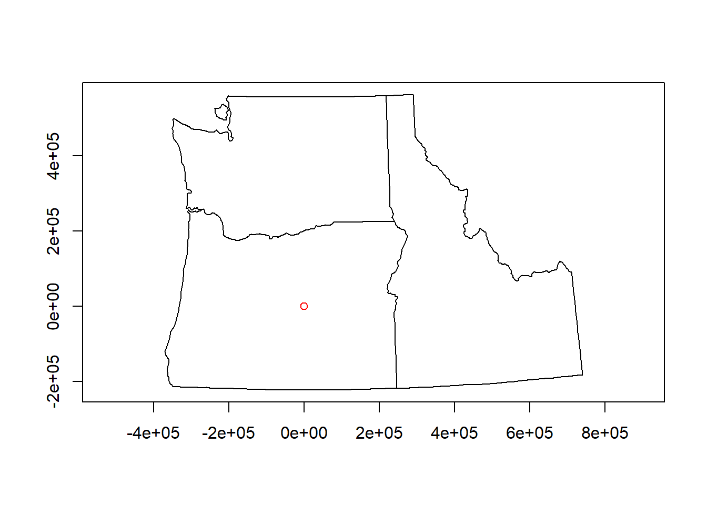
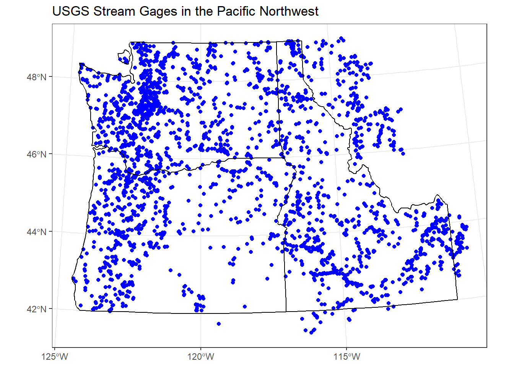

Chapter 3 Coordinate reference systems
3.1 Lesson Objectives
Describe and understand a CRS in R and components of a CRS
A CRS is made up of several components:
- Coordinate system: The x,y grid that defines where your data lies in space
- Horizontal and vertical units: The units describing grid along the x,y and possibly z axes
- Datum: The modeled version of the shape of the earth
- Projection details: If projected, the mathematical equation used to flatten objects from round surface (earth) to flat surface (paper or screen)
Figure 3.1: Source: https://mgimond.github.io/Spatial/coordinate-systems.html
The earth is a sphere, but more precisely, an ellipsoid, which is defined by two radii: - semi-major axis (equatorial radius) - semi-minor axis (polar radius)
We know with precision that the measure of these two are 6,378,137 meters and 6,356,752 meters respectively.
More precisely that an ellipsoid, though, we know that earth is a geoid - it is not perfectly smooth - and modelling the the undulations due to changes in gravitational pull for different locations is crucial to accuracy in a GIS. This is where a datum comes in - we match the geoid to the ellipsoid to best match local conditions. We have many datums to choose from based on location of interest - in the US we would typically choose NAD83
3.1.1 Why you need to know about CRS working with spatial data in R:
library(awra2020spatial)
library(readr)
library(sf)
data(pnw)
gages = read_csv(system.file("extdata/Gages_flowdata.csv", package = "awra2020spatial"))
gages_sf <- gages %>%
st_as_sf(coords = c("LON_SITE", "LAT_SITE"), crs = 4269, remove = FALSE) %>%
dplyr::select(STATION_NM,LON_SITE, LAT_SITE)
# Awesome, let's plot our gage data and state boundaries!
plot(pnw$geometry, axes=TRUE)
plot(gages_sf$geometry, col='red', add=TRUE)
There is no ‘on-the-fly’ projection in R - you need to make sure you specify the CRS of your objects, and CRS needs to match for any spatial operations or you’ll get an error
spatialreference.org is your friend in R - chances are you will use it frequently working with spatial data in R.
Useful
rgdalpackage functions:- projInfo(type=‘datum’)
- projInfo(type=‘ellps’)
- projInfo(type=‘proj’)
3.1.2 Changes to CRS recently in R in sf
It’s important to understand recent changes in handling of crs in sf
Prior to sf 0.9, crs were represented as lists with two components:
- epsg (European Petroleum Survey Group ) code, which could be NA
- proj4string - a projection string
library(sf)
# Linking to GEOS 3.8.0, GDAL 3.0.2, PROJ 6.2.1
st_crs(4326)
# Coordinate Reference System:
# EPSG: 4326
# proj4string: "+proj=longlat +datum=WGS84 +no_defs"Now, however, sf represents crs as lists with two different components:
- input
- wkt
library(sf)
## Linking to GEOS 3.8.0, GDAL 3.0.2, PROJ 6.2.1
(x = st_crs(4326))
## Coordinate Reference System:
## User input: EPSG:4326
## wkt:
## GEOGCRS["WGS 84",
## DATUM["World Geodetic System 1984",
## ELLIPSOID["WGS 84",6378137,298.257223563,
## LENGTHUNIT["metre",1]]],
## PRIMEM["Greenwich",0,
## ANGLEUNIT["degree",0.0174532925199433]],
## CS[ellipsoidal,2],
## AXIS["geodetic latitude (Lat)",north,
## ORDER[1],
## ANGLEUNIT["degree",0.0174532925199433]],
## AXIS["geodetic longitude (Lon)",east,
## ORDER[2],
## ANGLEUNIT["degree",0.0174532925199433]],
## USAGE[
## SCOPE["unknown"],
## AREA["World"],
## BBOX[-90,-180,90,180]],
## ID["EPSG",4326]]You can still get the proj4string or epsg value by:
x$epsg
## [1] 4326
x$proj4string
## [1] "+proj=longlat +datum=WGS84 +no_defs"3.1.3 Projected coordinate systems
Typically we want to work with data that is projected. Projected coordinate systems (which are based on Cartesian coordinates) have: an origin, an x axis, a y axis, and a linear unit of measure. Going from geographic coordinates to a projected coordinate reference systems requires mathematical transformations.
Four spatial properties of projected coordinate systems that are subject to distortion are: shape, area, distance and direction. A map that preserves shape is called conformal; one that preserves area is called equal-area; one that preserves distance is called equidistant; and one that preserves direction is called azimuthal (from https://mgimond.github.io/Spatial/coordinate-systems.html.
The takeaway from all this is you need to be aware of the crs for your objects in R, make sure they are projected if appropriate and in a projection that optimizes properties you are interested in, and objects you are analyzing or mapping together need to be in same crs.
Going back to our original example, we can transform crs of objects to work with them together:
## Coordinate Reference System:
## User input: EPSG:4269
## wkt:
## GEOGCRS["NAD83",
## DATUM["North American Datum 1983",
## ELLIPSOID["GRS 1980",6378137,298.257222101,
## LENGTHUNIT["metre",1]]],
## PRIMEM["Greenwich",0,
## ANGLEUNIT["degree",0.0174532925199433]],
## CS[ellipsoidal,2],
## AXIS["geodetic latitude (Lat)",north,
## ORDER[1],
## ANGLEUNIT["degree",0.0174532925199433]],
## AXIS["geodetic longitude (Lon)",east,
## ORDER[2],
## ANGLEUNIT["degree",0.0174532925199433]],
## USAGE[
## SCOPE["unknown"],
## AREA["North America - NAD83"],
## BBOX[14.92,167.65,86.46,-47.74]],
## ID["EPSG",4269]]## Coordinate Reference System:
## User input: +proj=aea +lat_1=41 +lat_2=47 +lat_0=44 +lon_0=-120 +x_0=0 +y_0=0 +ellps=GRS80 +datum=NAD83 +units=m +no_defs
## wkt:
## PROJCRS["unknown",
## BASEGEOGCRS["unknown",
## DATUM["North American Datum 1983",
## ELLIPSOID["GRS 1980",6378137,298.257222101,
## LENGTHUNIT["metre",1]],
## ID["EPSG",6269]],
## PRIMEM["Greenwich",0,
## ANGLEUNIT["degree",0.0174532925199433],
## ID["EPSG",8901]]],
## CONVERSION["unknown",
## METHOD["Albers Equal Area",
## ID["EPSG",9822]],
## PARAMETER["Latitude of false origin",44,
## ANGLEUNIT["degree",0.0174532925199433],
## ID["EPSG",8821]],
## PARAMETER["Longitude of false origin",-120,
## ANGLEUNIT["degree",0.0174532925199433],
## ID["EPSG",8822]],
## PARAMETER["Latitude of 1st standard parallel",41,
## ANGLEUNIT["degree",0.0174532925199433],
## ID["EPSG",8823]],
## PARAMETER["Latitude of 2nd standard parallel",47,
## ANGLEUNIT["degree",0.0174532925199433],
## ID["EPSG",8824]],
## PARAMETER["Easting at false origin",0,
## LENGTHUNIT["metre",1],
## ID["EPSG",8826]],
## PARAMETER["Northing at false origin",0,
## LENGTHUNIT["metre",1],
## ID["EPSG",8827]]],
## CS[Cartesian,2],
## AXIS["(E)",east,
## ORDER[1],
## LENGTHUNIT["metre",1,
## ID["EPSG",9001]]],
## AXIS["(N)",north,
## ORDER[2],
## LENGTHUNIT["metre",1,
## ID["EPSG",9001]]]]## [1] FALSE# transform one to the other
gages_sf <- st_transform(gages_sf, st_crs(pnw))
ggplot() +
geom_sf(data=gages_sf, color="blue") +
geom_sf(data=pnw, color="black", fill=NA) +
labs(title="USGS Stream Gages in the Pacific Northwest") +
theme_bw() 